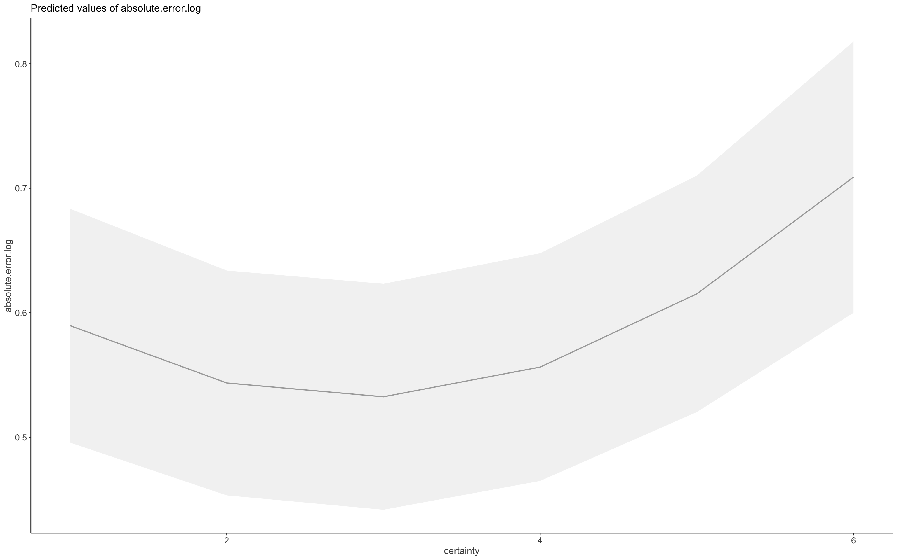
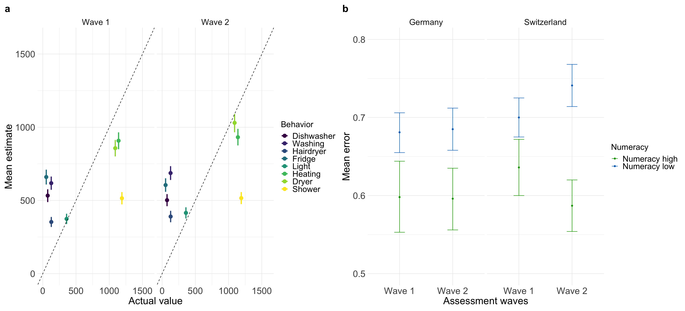
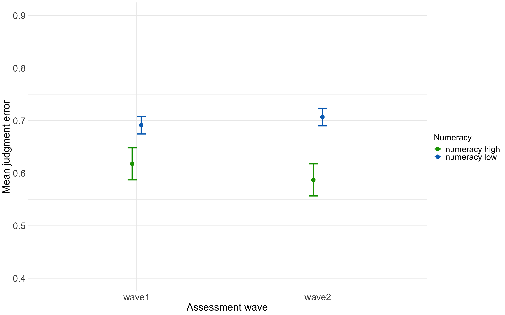

analyses judgment new
2023-09-29
H3a frequency wave 1
H3a
| mean.abs.error | |||
|---|---|---|---|
| Predictors | Estimates | CI | p |
| (Intercept) | 0.88 | 0.77 – 1.00 | <0.001 |
| gender [male] | -0.04 | -0.07 – -0.00 | 0.031 |
| age | -0.00 | -0.00 – -0.00 | <0.001 |
| country Switzerland | 0.02 | -0.01 – 0.06 | 0.162 |
|
income wave1 [<1’500€ <3’100CHF] |
0.02 | -0.03 – 0.08 | 0.348 |
|
income wave1 [> 4’000€ >5’900 CHF] |
-0.00 | -0.05 – 0.05 | 0.949 |
|
income wave1 [2’500- 4’000€ <4’300- 5’899CHF] |
-0.03 | -0.07 – 0.02 | 0.266 |
| education [middle school] | -0.00 | -0.05 – 0.04 | 0.865 |
|
education [no formal education] |
0.09 | 0.03 – 0.15 | 0.004 |
|
education [obligatory school] |
0.05 | 0.01 – 0.09 | 0.019 |
| climate concern | -0.02 | -0.04 – -0.01 | <0.001 |
| mean freq clean | 0.01 | -0.02 – 0.05 | 0.400 |
| Observations | 1036 | ||
| R2 / R2 adjusted | 0.063 / 0.053 | ||
H3a cleaned
| mean.abs.error | |||
|---|---|---|---|
| Predictors | Estimates | CI | p |
| (Intercept) | 0.80 | 0.70 – 0.91 | <0.001 |
| gender [male] | -0.03 | -0.07 – -0.00 | 0.027 |
| age | -0.00 | -0.00 – -0.00 | <0.001 |
| country Switzerland | 0.02 | -0.01 – 0.05 | 0.298 |
|
income wave1 [<1’500€ <3’100CHF] |
0.02 | -0.03 – 0.07 | 0.389 |
|
income wave1 [> 4’000€ >5’900 CHF] |
0.02 | -0.03 – 0.06 | 0.483 |
|
income wave1 [2’500- 4’000€ <4’300- 5’899CHF] |
-0.02 | -0.06 – 0.03 | 0.429 |
| education [middle school] | 0.02 | -0.03 – 0.06 | 0.443 |
|
education [no formal education] |
0.09 | 0.03 – 0.15 | 0.002 |
|
education [obligatory school] |
0.06 | 0.02 – 0.10 | 0.002 |
| climate concern | -0.01 | -0.03 – -0.00 | 0.032 |
| mean freq clean | -0.00 | -0.03 – 0.03 | 0.979 |
| Observations | 980 | ||
| R2 / R2 adjusted | 0.046 / 0.035 | ||
H3b wave 2
certainty and accuracy
Model with certainty and numeracy
| absolute.error.log | |||
|---|---|---|---|
| Predictors | Estimates | CI | p |
| (Intercept) | 0.66 | 0.56 – 0.77 | <0.001 |
| certainty | 0.01 | -0.00 – 0.02 | 0.077 |
| numeracy f [numeracy low] | 0.12 | 0.08 – 0.16 | <0.001 |
| education [middle school] | 0.03 | -0.01 – 0.08 | 0.165 |
|
education [no formal education] |
0.07 | 0.01 – 0.13 | 0.019 |
|
education [obligatory school] |
0.04 | 0.00 – 0.09 | 0.046 |
| country Switzerland | 0.05 | 0.01 – 0.08 | 0.007 |
| gender [male] | -0.02 | -0.06 – 0.01 | 0.159 |
|
income [<1’500€ <3’100CHF] |
0.05 | -0.01 – 0.10 | 0.082 |
|
income [> 4’000€ >5’900 CHF] |
0.01 | -0.04 – 0.05 | 0.806 |
|
income [2’500- 4’000€ <4’300- 5’899CHF] |
0.02 | -0.03 – 0.06 | 0.475 |
| age | -0.00 | -0.00 – -0.00 | <0.001 |
| concern scaled | -0.03 | -0.04 – -0.02 | <0.001 |
| Random Effects | |||
| σ2 | 0.22 | ||
| τ00 m | 0.04 | ||
| τ00 behavior | 0.01 | ||
| ICC | 0.19 | ||
| N m | 1036 | ||
| N behavior | 8 | ||
| Observations | 8288 | ||
| Marginal R2 / Conditional R2 | 0.032 / 0.219 | ||
Model with exponential certainty
| absolute.error.log | |||
|---|---|---|---|
| Predictors | Estimates | CI | p |
| (Intercept) | 0.81 | 0.69 – 0.93 | <0.001 |
| certainty | -0.11 | -0.16 – -0.06 | <0.001 |
| numeracy f [numeracy low] | 0.12 | 0.08 – 0.16 | <0.001 |
| certainty^2 | 0.02 | 0.01 – 0.03 | <0.001 |
| education [middle school] | 0.04 | -0.01 – 0.08 | 0.129 |
|
education [no formal education] |
0.08 | 0.02 – 0.14 | 0.012 |
|
education [obligatory school] |
0.05 | 0.00 – 0.09 | 0.035 |
| country Switzerland | 0.05 | 0.01 – 0.08 | 0.006 |
| gender [male] | -0.02 | -0.06 – 0.01 | 0.152 |
|
income [<1’500€ <3’100CHF] |
0.05 | -0.00 – 0.10 | 0.066 |
|
income [> 4’000€ >5’900 CHF] |
0.01 | -0.04 – 0.05 | 0.701 |
|
income [2’500- 4’000€ <4’300- 5’899CHF] |
0.02 | -0.03 – 0.07 | 0.394 |
| age | -0.00 | -0.00 – -0.00 | <0.001 |
| concern scaled | -0.03 | -0.04 – -0.02 | <0.001 |
| Random Effects | |||
| σ2 | 0.22 | ||
| τ00 m | 0.04 | ||
| τ00 behavior | 0.01 | ||
| ICC | 0.19 | ||
| N m | 1036 | ||
| N behavior | 8 | ||
| Observations | 8288 | ||
| Marginal R2 / Conditional R2 | 0.036 / 0.220 | ||
## Model contains polynomial or cubic / quadratic terms.
## Consider using `terms="certainty [all]"` to get smooth
## plots. See also package-vignette 'Marginal Effects at
## Specific Values'.
H3b cleaned
Model with certainty and numeracy| absolute.error.log | |||
|---|---|---|---|
| Predictors | Estimates | CI | p |
| (Intercept) | 0.65 | 0.55 – 0.76 | <0.001 |
| certainty | 0.01 | -0.00 – 0.02 | 0.099 |
| numeracy f [numeracy low] | 0.10 | 0.07 – 0.14 | <0.001 |
| education [middle school] | 0.03 | -0.01 – 0.07 | 0.180 |
|
education [no formal education] |
0.07 | 0.02 – 0.13 | 0.014 |
|
education [obligatory school] |
0.05 | 0.00 – 0.09 | 0.029 |
| country Switzerland | 0.04 | 0.01 – 0.07 | 0.018 |
| gender [male] | -0.04 | -0.07 – -0.00 | 0.023 |
|
income [<1’500€ <3’100CHF] |
0.03 | -0.02 – 0.08 | 0.214 |
|
income [> 4’000€ >5’900 CHF] |
-0.00 | -0.04 – 0.04 | 0.984 |
|
income [2’500- 4’000€ <4’300- 5’899CHF] |
0.02 | -0.03 – 0.06 | 0.467 |
| age | -0.00 | -0.00 – -0.00 | <0.001 |
| concern scaled | -0.02 | -0.03 – -0.01 | <0.001 |
| Random Effects | |||
| σ2 | 0.22 | ||
| τ00 m | 0.03 | ||
| τ00 behavior | 0.01 | ||
| ICC | 0.17 | ||
| N m | 980 | ||
| N behavior | 8 | ||
| Observations | 7840 | ||
| Marginal R2 / Conditional R2 | 0.024 / 0.190 | ||
H3b plot (cleaned)

H3b cleaned, exponential
| absolute.error.log | |||
|---|---|---|---|
| Predictors | Estimates | CI | p |
| (Intercept) | 0.78 | 0.66 – 0.90 | <0.001 |
| certainty | -0.10 | -0.14 – -0.05 | <0.001 |
| numeracy f [numeracy low] | 0.10 | 0.06 – 0.14 | <0.001 |
| certainty^2 | 0.02 | 0.01 – 0.02 | <0.001 |
| education [middle school] | 0.03 | -0.01 – 0.08 | 0.154 |
|
education [no formal education] |
0.08 | 0.02 – 0.14 | 0.009 |
|
education [obligatory school] |
0.05 | 0.01 – 0.09 | 0.023 |
| country Switzerland | 0.04 | 0.01 – 0.07 | 0.016 |
| gender [male] | -0.04 | -0.07 – -0.00 | 0.024 |
|
income [<1’500€ <3’100CHF] |
0.03 | -0.02 – 0.08 | 0.174 |
|
income [> 4’000€ >5’900 CHF] |
0.00 | -0.04 – 0.05 | 0.912 |
|
income [2’500- 4’000€ <4’300- 5’899CHF] |
0.02 | -0.02 – 0.06 | 0.409 |
| age | -0.00 | -0.00 – -0.00 | <0.001 |
| concern scaled | -0.02 | -0.03 – -0.01 | <0.001 |
| Random Effects | |||
| σ2 | 0.22 | ||
| τ00 m | 0.03 | ||
| τ00 behavior | 0.01 | ||
| ICC | 0.17 | ||
| N m | 980 | ||
| N behavior | 8 | ||
| Observations | 7840 | ||
| Marginal R2 / Conditional R2 | 0.028 / 0.192 | ||
H3b (cleaned) exponential plot
## Model contains polynomial or cubic / quadratic terms.
## Consider using `terms="certainty [all]"` to get smooth
## plots. See also package-vignette 'Marginal Effects at
## Specific Values'.
Judgment estimates and actual values both waves together
cleaned for pattern people Fig 2a

misestimation of impact across waves
not cleaned
## impact wave n Mean Conf.level Trad.lower Trad.upper
## 1 high wave1 3108 0.649 0.95 0.623 0.676
## 2 high wave2 3108 0.722 0.95 0.694 0.750
## 3 low wave1 5180 5.550 0.95 5.290 5.800
## 4 low wave2 5180 5.590 0.95 5.340 5.840
## Mean.2 Trad.lower2 Trad.upper2
## 1 1.5408320 1.6051364 1.4792899
## 2 1.3850416 1.4409222 1.3333333
## 3 0.1801802 0.1890359 0.1724138
## 4 0.1788909 0.1872659 0.1712329##
## Paired t-test
##
## data: data.accuracy.waves.long.total2.l$mis.estimation by data.accuracy.waves.long.total2.l$wave
## t = -0.62413, df = 8287, p-value = 0.5326
## alternative hypothesis: true mean difference is not equal to 0
## 95 percent confidence interval:
## -0.2302919 0.1190601
## sample estimates:
## mean difference
## -0.05561587## ANOVA Table (type III tests)
##
## Effect DFn DFd F p p<.05 ges
## 1 wave 1 1035 0.249 6.18e-01 4.75e-05
## 2 impact 1 1035 1215.529 8.96e-177 * 2.44e-01
## 3 wave:impact 1 1035 0.018 8.95e-01 2.46e-06cleaned
## impact wave n Mean Conf.level Trad.lower Trad.upper
## 1 high wave1 2940 0.672 0.95 0.645 0.70
## 2 high wave2 2940 0.732 0.95 0.703 0.76
## 3 low wave1 4900 5.710 0.95 5.440 5.98
## 4 low wave2 4900 5.610 0.95 5.360 5.86
## Mean.2 Trad.lower2 Trad.upper2
## 1 1.4880952 1.5503876 1.4285714
## 2 1.3661202 1.4224751 1.3157895
## 3 0.1751313 0.1838235 0.1672241
## 4 0.1782531 0.1865672 0.1706485##
## Paired t-test
##
## data: data.accuracy.waves.long.total_clean2$mis.estimation by data.accuracy.waves.long.total_clean2$wave
## t = 0.46993, df = 7839, p-value = 0.6384
## alternative hypothesis: true mean difference is not equal to 0
## 95 percent confidence interval:
## -0.1344126 0.2191787
## sample estimates:
## mean difference
## 0.04238306## ANOVA Table (type III tests)
##
## Effect DFn DFd F p p<.05 ges
## 1 wave 1 979 0.192 6.62e-01 6.19e-05
## 2 impact 1 979 7624.582 0.00e+00 * 2.83e-01
## 3 wave:impact 1 979 16.174 6.22e-05 * 4.01e-04## Analysis of Deviance Table (Type III Wald F tests with Kenward-Roger df)
##
## Response: Mean
## F Df Df.res Pr(>F)
## (Intercept) 125.7957 1 979 < 2e-16 ***
## impact 2967.6195 1 2937 < 2e-16 ***
## wave 0.4645 1 2937 0.49559
## impact:wave 3.0118 1 2937 0.08277 .
## ---
## Signif. codes: 0 '***' 0.001 '**' 0.01 '*' 0.05 '.' 0.1 ' ' 1Mean judgment error across waves by numeracy
witout pattern people fig 2b

Both judgment figures 
Across waves judgment error
same approach as misestimation for judgment error
Models cleaned for pattern people
## numeracy.f wave n Mean Conf.level Trad.lower
## 1 numeracy high wave1 1800 0.617 0.95 0.594
## 2 numeracy high wave2 1800 0.592 0.95 0.570
## 3 numeracy low wave1 6040 0.690 0.95 0.677
## 4 numeracy low wave2 6040 0.710 0.95 0.697
## Trad.upper Mean.2 Trad.lower2 Trad.upper2
## 1 0.639 1.620746 1.683502 1.564945
## 2 0.613 1.689189 1.754386 1.631321
## 3 0.702 1.449275 1.477105 1.424501
## 4 0.724 1.408451 1.434720 1.381215##
## Paired t-test
##
## data: accuracy.waves.error.num$Mean by accuracy.waves.error.num$wave
## t = -0.44352, df = 1959, p-value = 0.6574
## alternative hypothesis: true mean difference is not equal to 0
## 95 percent confidence interval:
## -0.02606782 0.01645201
## sample estimates:
## mean difference
## -0.004807908## Analysis of Deviance Table (Type III Wald F tests with Kenward-Roger df)
##
## Response: error
## F Df Df.res Pr(>F)
## (Intercept) 7296.7998 1 1011.3 < 2.2e-16 ***
## numeracy.f 41.0589 1 977.0 2.294e-10 ***
## wave 0.6490 1 14696.0 0.420482
## impact 4.4170 1 14696.0 0.035601 *
## country 6.4215 1 977.0 0.011430 *
## numeracy.f:wave 6.2639 1 14696.0 0.012333 *
## wave:impact 7.1343 1 14696.0 0.007571 **
## ---
## Signif. codes: 0 '***' 0.001 '**' 0.01 '*' 0.05 '.' 0.1 ' ' 1## # Effect Size for ANOVA (Type III)
##
## Parameter | Eta2 (partial) | 95% CI
## -----------------------------------------------
## numeracy.f | 0.04 | [0.02, 1.00]
## wave | 4.42e-05 | [0.00, 1.00]
## impact | 3.00e-04 | [0.00, 1.00]
## country | 6.53e-03 | [0.00, 1.00]
## numeracy.f:wave | 4.26e-04 | [0.00, 1.00]
## wave:impact | 4.85e-04 | [0.00, 1.00]
##
## - One-sided CIs: upper bound fixed at [1.00].| error | |||
|---|---|---|---|
| Predictors | Estimates | CI | p |
| (Intercept) | 0.65 | 0.64 – 0.67 | <0.001 |
| numeracy f1 | -0.05 | -0.06 – -0.03 | <0.001 |
| wave1 | 0.00 | -0.01 – 0.01 | 0.420 |
| impact1 | 0.01 | 0.00 – 0.02 | 0.036 |
| country1 | -0.02 | -0.03 – -0.00 | 0.011 |
| numeracy f1 × wave1 | 0.01 | 0.00 – 0.02 | 0.012 |
| wave1 × impact1 | -0.01 | -0.02 – -0.00 | 0.008 |
| Random Effects | |||
| σ2 | 0.23 | ||
| τ00 m | 0.02 | ||
| ICC | 0.10 | ||
| N m | 980 | ||
| Observations | 15680 | ||
| Marginal R2 / Conditional R2 | 0.008 / 0.104 | ||
Plots: Judgment error for impact of actions across waves

Plot: Judgment error for numeracy across waves

Plot: numeracy by wave and country

Plot: Everything in one plot

Plot: Everything in one plot2

By country
Switzerland
## Analysis of Deviance Table (Type III Wald F tests with Kenward-Roger df)
##
## Response: error
## F Df Df.res Pr(>F)
## (Intercept) 4372.6574 1 474.4 < 2.2e-16 ***
## numeracy.f 31.0434 1 453.0 4.336e-08 ***
## wave 0.4455 1 6821.0 0.5044796
## impact 87.6079 1 6821.0 < 2.2e-16 ***
## numeracy.f:wave 10.9238 1 6821.0 0.0009543 ***
## wave:impact 3.0367 1 6821.0 0.0814473 .
## ---
## Signif. codes: 0 '***' 0.001 '**' 0.01 '*' 0.05 '.' 0.1 ' ' 1## # Effect Size for ANOVA (Type III)
##
## Parameter | Eta2 (partial) | 95% CI
## -----------------------------------------------
## numeracy.f | 0.06 | [0.03, 1.00]
## wave | 6.53e-05 | [0.00, 1.00]
## impact | 0.01 | [0.01, 1.00]
## numeracy.f:wave | 1.60e-03 | [0.00, 1.00]
## wave:impact | 4.45e-04 | [0.00, 1.00]
##
## - One-sided CIs: upper bound fixed at [1.00].| error | |||
|---|---|---|---|
| Predictors | Estimates | CI | p |
| (Intercept) | 0.65 | 0.63 – 0.67 | <0.001 |
| numeracy f1 | -0.05 | -0.07 – -0.04 | <0.001 |
| wave1 | 0.00 | -0.01 – 0.02 | 0.504 |
| impact1 | 0.06 | 0.04 – 0.07 | <0.001 |
| numeracy f1 × wave1 | 0.02 | 0.01 – 0.04 | 0.001 |
| wave1 × impact1 | -0.01 | -0.02 – 0.00 | 0.081 |
| Random Effects | |||
| σ2 | 0.24 | ||
| τ00 m | 0.02 | ||
| ICC | 0.06 | ||
| N m | 455 | ||
| Observations | 7280 | ||
| Marginal R2 / Conditional R2 | 0.021 / 0.084 | ||
Plot Switzerland
## Scale for y is already present.
## Adding another scale for y, which will replace the existing
## scale.
Germany
| error | |||
|---|---|---|---|
| Predictors | Estimates | CI | p |
| (Intercept) | 0.65 | 0.63 – 0.67 | <0.001 |
| numeracy f1 | -0.04 | -0.07 – -0.02 | <0.001 |
| wave1 | 0.00 | -0.01 – 0.01 | 0.704 |
| impact1 | -0.03 | -0.04 – -0.02 | <0.001 |
| numeracy f1 × wave1 | 0.00 | -0.01 – 0.01 | 0.782 |
| wave1 × impact1 | -0.01 | -0.02 – -0.00 | 0.041 |
| Random Effects | |||
| σ2 | 0.22 | ||
| τ00 m | 0.03 | ||
| ICC | 0.13 | ||
| N m | 525 | ||
| Observations | 8400 | ||
| Marginal R2 / Conditional R2 | 0.009 / 0.135 | ||
## Analysis of Deviance Table (Type III Wald F tests with Kenward-Roger df)
##
## Response: error
## F Df Df.res Pr(>F)
## (Intercept) 3218.1250 1 537.4 < 2.2e-16 ***
## numeracy.f 14.2630 1 523.0 0.0001772 ***
## wave 0.1445 1 7871.0 0.7038393
## impact 38.0391 1 7871.0 7.276e-10 ***
## numeracy.f:wave 0.0766 1 7871.0 0.7819412
## wave:impact 4.1912 1 7871.0 0.0406683 *
## ---
## Signif. codes: 0 '***' 0.001 '**' 0.01 '*' 0.05 '.' 0.1 ' ' 1## # Effect Size for ANOVA (Type III)
##
## Parameter | Eta2 (partial) | 95% CI
## -----------------------------------------------
## numeracy.f | 0.03 | [0.01, 1.00]
## wave | 1.84e-05 | [0.00, 1.00]
## impact | 4.81e-03 | [0.00, 1.00]
## numeracy.f:wave | 9.73e-06 | [0.00, 1.00]
## wave:impact | 5.32e-04 | [0.00, 1.00]
##
## - One-sided CIs: upper bound fixed at [1.00].Plot Germany
## Scale for y is already present.
## Adding another scale for y, which will replace the existing
## scale.
across waves cohens q
Original pre-registered plan to compare cohens q
For high numeracy people ths difference does approach a small effect (such that the correlation between estimates and actual values ist higher in wave2)
## Cohens q = -0.0491670467886844high numeracy
## Cohens q = -0.0932812950061401For high numeracy people the cohens q (rounded) can be categorized as a small effect
without pattern people
## Cohens q = -0.0497625254424904high numeracy no pattern people
## Cohens q = -0.0912862921460136For high numeracy people the cohens q (rounded) can be categorized as a small effect